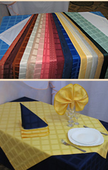
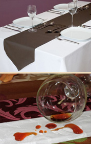
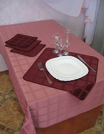
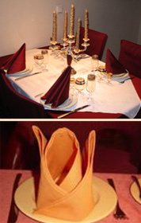
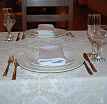
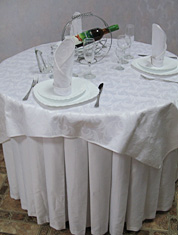
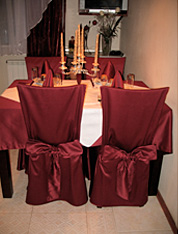

|
Ткани
"Русский Дом МЛК"
- это профессионально подобранный качественный текстиль, ключ к процветанию Вашего заведения!
Если Вы мечтаете о полном преображении или частичном изменении интерьера, то мы готовы предложить Вам богатый выбор возможностей в сфере пошива различных типов текстиля, таких, как:
- столовое бельё (скатерти для ресторанов, напероны, дорожки, салфетки)
- фуршетные юбки
- чехлы на стулья
- одежда для поваров и официантов
- шторы
|
Наперон — это верхняя скатерть. При сервировке стола служит своеобразным украшением и располагается поверх основной скатерти. Для ресторанов наперон поверх скатерти имеет большое практическое значение. Имея небольшой размер, и, соответственно, и малую стоимость по сравнению с основной скатертью, наперон имеет ряд дополнительных преимуществ:
- стильно и современно выглядит, освежает сервировку стола
- приглушает стук посуды, раздражающий посетителей
- при использовании наперона стирать скатерти приходится реже
- стирка самого наперона обходится гораздо дешевле, чем основной скатерти
|
 |
|
|
Дорожки — создают особую, интимную атмосферу, соединяя людей по обе стороны стола. Дорожки можно укладывать на скатерть или просто на столешницу.
Узкие дорожки прекрасно сочетаются со всеми видами скатертей, стелятся, как поперек стола по две или более, так и вдоль. Дорожки придают убранству ресторану особый, неповторимый стиль. Они стелятся на столешницу, не скрывают текстуру мебели, подчеркивают ее достоинства и, если это необходимо, могут спрятать некоторые недостатки. Дорожки либо резко контрастируют со структурой и цветом скатерти, либо гармонично сочетаются.
При изготовление дорожек используется натуральная, плотная ткань для ресторана, главное, дорожка не должна скользить по столешнице.
|
 |
Сет — это небольшая скатерть, «профессиональная» задача которой — подставка для посуды. Площадью сет не должен быть меньше, чем 30x40 см, чтобы для устанавливаемой на нём посуды (тарелки, бокала и прибора) было достаточно места. Наиболее практичны и удобны сеты прямоугольной и овальной формы.
В некоторых случаях при сервировке трапезного стола комбинируют несколько сетов: на середину кладётся сет вытянутой формы (так называемая «дорожка»), а под тарелку каждого из посетителей — квадратный сет с тем же рисунком.
Помимо текстиля, при изготовлении сетов могут использовать дерево или пластмассу.
|
 |
Салфетка (махровая, льняная, бумажная) — применяется не только для вытирания губ и рук после еды, но и является значимым элементом сервировки стола. Существует даже несколько определенных правил, касающихся исключительно сервировки салфеток:
- Салфетки должны быть квадратной формы. Если в наличии только прямоугольные салфетки, то путём дополнительного их складывания из них создаются квадратные;
- Все салфетки на одном столе должны быть одинаково сложены. Причем, складывая салфетку пальцами, необходимо стараться как можно меньше прикасаться к ней;
- Сложенная салфетка не должна создавать неудобства с ее быстрым разворачиванием.
При сервировке чайного или кофейного столика салфетку можно поместить в чашку, перевязать ею ложку, продеть через ручку чашки, декоративно свернутые салфетки кладут на тарелки или слева от них.
|
 |
Скатерть профессиональная — главный предмет сервировки любого стола. Изготавливается из различных материалов разных цветов и оттенков. Классическим материалом является лен и хлопок. Лен — добротная, очень плотная ткань, которая, однако, легко мнется. Поэтому скатерти чаще делают из смешанных волокон — льна с хлопком или льна с синтетикой.
Профессиональное столовое белье не принято делать вычурным. Максимум, чем позволительно украсить при изготовлении основную скатерть — атласный кант. Для того, чтобы оживить стол чаще используют дополнительный кухонный текстиль для ресторанов. Чтобы подчёркнуть цвет основной скатерти, используют наперон (кремовый — если скатерть тёмного цвета, тёмно синий — если светлого) или сет.
|
 |
Фуршетные юбки — аксессуары, предназначенные для фуршетов и банкетов. Главная их особенность — возможность элегантно соединить несколько столов, превратив их в один. Юбки крепятся к поверхности стола с помощью клипс для банкетных юбок. Существует несколько вариантов крепления фуршетных юбок, но самым идеальным крепежом считаются липучки или клипсы для банкетных столов. При этом преображаются даже старые и некрасивые столы, общий вид которых становится праздничным и богатым. Единственный недостаток такого способа крепления то, что сверху столешницы будут видны клипсы. Для банкетных столов решить эту проблему легко — сверху стелется основная скатерть. Идеальный тип ткани, используемый для банкетных юбок — полиэстер. Для ресторана это наилучший из возможных вариантов: от этого материала прекрасно отстирываются пятна, он не садится от многократных стирок и цвет его не тускнеет со временем.
|
 |
Чехлы на стулья представляют одну из важных составляющих любого интерьера, ведь они придают интерьеру уют и новизну. Чехлы на стулья выглядят благородно и торжественно. Выбор за вами, простор для творчества безграничен.
Чехлы могут быть плотно сидящие, свободными или в виде драпировок, просто наброшенных на мебель.
Сделав чехлы гармонирующими по колориту и расцветке с декоративными подушками и материалом штор, можно создать парадный интерьер, очень нарядный и в то же время изысканный.
Материалом для чехлов может служить лен, чистый или с добавками синтетических волокон. Натуральные же ткани очень ценятся в современных интерьерах.
|  |
|